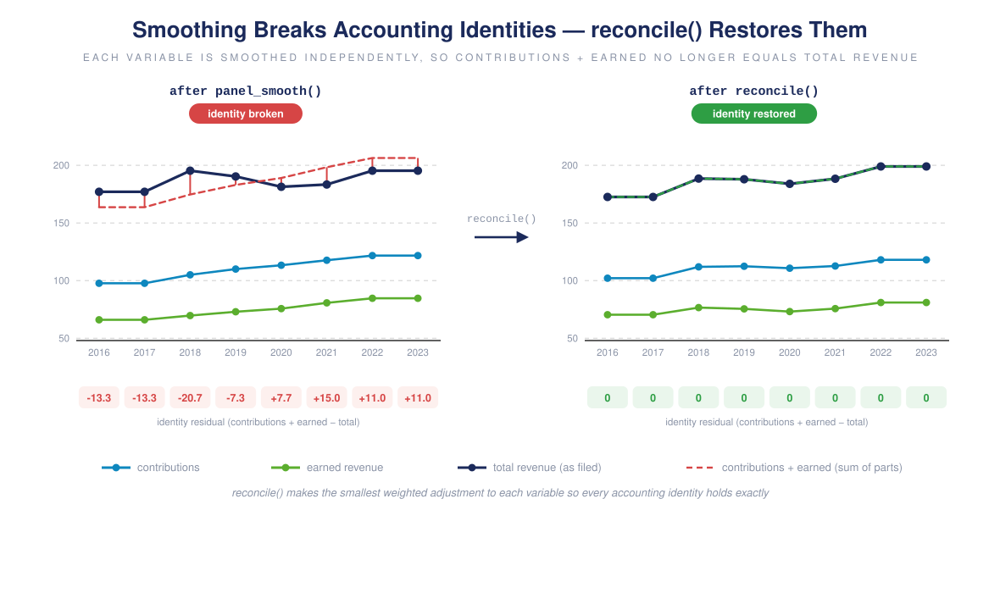

Accounting consistency
accounting-consistency.Rmd990 financial data carries deterministic accounting
identities: a total is the sum of its parts, a net equals gross
minus expenses, and on the balance sheet assets equal liabilities plus
net assets. panel990 ships these as a registry and lets you
check whether rows satisfy them and
reconcile rows that do not – changing the values as
little as possible.
The identity registry
data("accounting_identities", package = "panel990")
by_id <- unique(accounting_identities[, c("identity", "section", "type")])
table(by_id$section, by_id$type)
#>
#> balance column grand_total net subtotal
#> balance_sheet 2 0 0 1 2
#> expenses 0 32 0 0 0
#> revenue 0 11 1 6 358 identities across revenue (Part VIII), functional expenses (Part IX), and the balance sheet (Part X). Each is a linear combination of ef2 fields that must equal zero; for example the contributions subtotal:
accounting_identities[accounting_identities$identity == "rev_contributions_subtotal",
c("variable", "coefficient")]
#> variable coefficient
#> 45 F9_08_REV_CONTR_TOT 1
#> 46 F9_08_REV_CONTR_FED_CAMP -1
#> 47 F9_08_REV_CONTR_MEMBSHIP_DUE -1
#> 48 F9_08_REV_CONTR_FUNDR_EVNT -1
#> 49 F9_08_REV_CONTR_RLTD_ORG -1
#> 50 F9_08_REV_CONTR_GOVT_GRANT -1
#> 51 F9_08_REV_CONTR_OTH -1Checking
accounting_check() evaluates every identity whose fields
are present and, by default, returns only the violations. Start from a
consistent revenue row:
row <- data.frame(
EIN2 = "A", TAX_YEAR = 2020,
F9_08_REV_CONTR_FED_CAMP = 100, F9_08_REV_CONTR_MEMBSHIP_DUE = 50,
F9_08_REV_CONTR_FUNDR_EVNT = 30, F9_08_REV_CONTR_RLTD_ORG = 20,
F9_08_REV_CONTR_GOVT_GRANT = 200, F9_08_REV_CONTR_OTH = 100,
F9_08_REV_CONTR_TOT = 500,
F9_08_REV_OTH_INVEST_INCOME_RLTD = 10, F9_08_REV_OTH_INVEST_INCOME_UBIZ = 5,
F9_08_REV_OTH_INVEST_INCOME_EXCL = 35, F9_08_REV_OTH_INVEST_INCOME_TOT = 50
)
accounting_check(row) # consistent -> no violations
#> [1] EIN2 TAX_YEAR identity residual ok
#> <0 rows> (or 0-length row.names)Now imagine two contribution components and one investment column were imputed independently and no longer add up:
bad <- row
bad$F9_08_REV_CONTR_GOVT_GRANT <- 180 # true 200
bad$F9_08_REV_CONTR_OTH <- 90 # true 100
bad$F9_08_REV_OTH_INVEST_INCOME_EXCL <- 30 # true 35
accounting_check(bad)
#> EIN2 TAX_YEAR identity residual ok
#> 1 A 2020 rev_contributions_subtotal 30 FALSE
#> 2 A 2020 rev_invest_columns 5 FALSEThe check names the broken identities and the exact gap: contributions short by 30, the investment column short by 5.
Reconciling
reconcile() adjusts the values as little as possible
(weighted least squares) to satisfy the identities:

Because the org reported its totals, we hold those fixed and let the imputed components move:
imputed <- c("F9_08_REV_CONTR_GOVT_GRANT", "F9_08_REV_CONTR_OTH",
"F9_08_REV_OTH_INVEST_INCOME_EXCL")
fixed <- setdiff(names(bad), c(imputed, "EIN2", "TAX_YEAR"))
rec <- reconcile(bad, fixed = fixed)
rec[, c(imputed, "F9_08_REV_CONTR_TOT", "F9_08_REV_OTH_INVEST_INCOME_TOT")]
#> F9_08_REV_CONTR_GOVT_GRANT F9_08_REV_CONTR_OTH
#> 1 195 105
#> F9_08_REV_OTH_INVEST_INCOME_EXCL F9_08_REV_CONTR_TOT
#> 1 35 500
#> F9_08_REV_OTH_INVEST_INCOME_TOT
#> 1 50
accounting_check(rec) # identities restored
#> [1] EIN2 TAX_YEAR identity residual ok
#> <0 rows> (or 0-length row.names)The 30 contributions gap splits evenly across the two free components
(195 / 105); the single free investment column absorbs its 5 (35). Every
identity now holds and the reported totals are untouched. Use
weights= to make some values more resistant to change than
others (e.g. by imputation uncertainty), or a different
fixed= set to hold different values.
When does this matter?
A useful subtlety: whole-row linear imputation preserves linear identities. If the years bracketing a gap both balance, then interpolating (or averaging, or carrying forward) the entire row also balances – it is an affine combination of balanced vectors. So identities break mainly under:
- partial missingness – some cells observed, some imputed (the case above);
-
rounding –
as_integersrounds each cell independently, so sums drift; -
filer error in the source data – which
accounting_check()surfaces on observed rows as a data-quality signal, not just an imputation artifact.
Scope and caveats
The registry is a curated, high-confidence set: column splits,
subtotals, net-of-expense lines, the revenue grand total, and the
balance-sheet equation. It deliberately omits identities that cannot
close cleanly from the 1x1 tables alone – the expense line-24 write-ins
live in a one-to-many detail table, and total assets / net-asset
composition hit form-version variants and
donor-restriction-vs-fund-accounting differences. Memo lines (“of which”
amounts) are inequalities, not sums, and are excluded. All identities
are scoped to the full 990 (form_scope = "PC"); the 990EZ
has its own, smaller set. ```